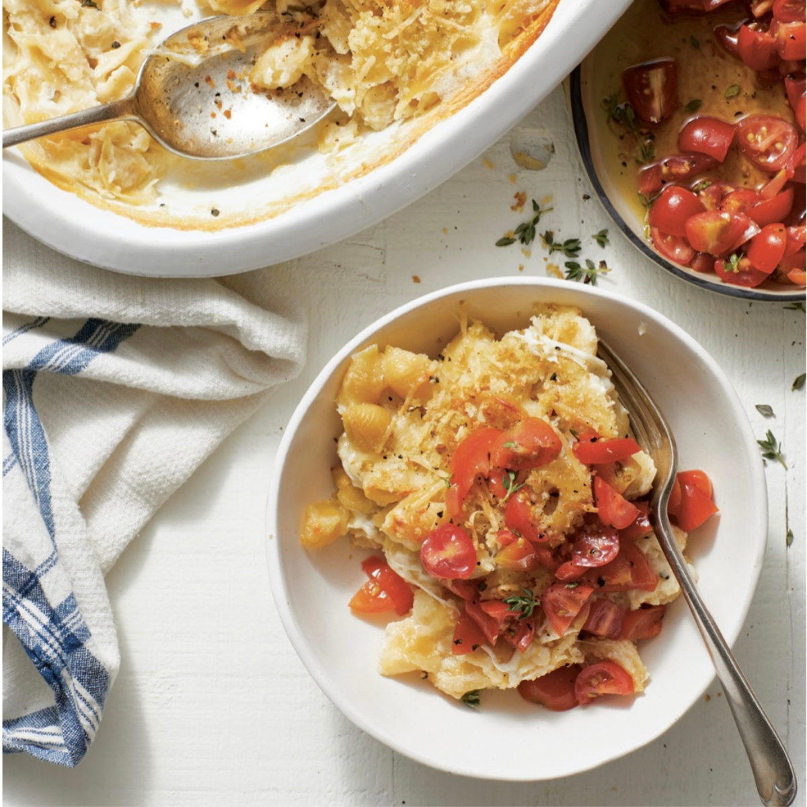
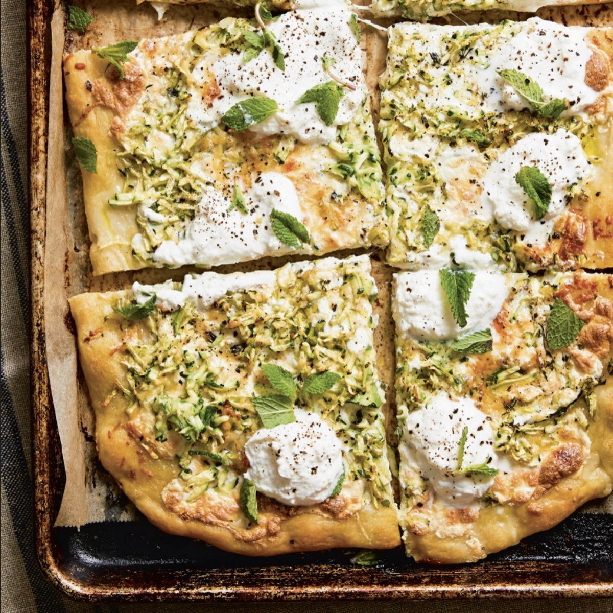

Chickpea-Pasta Mac and Cheese with Chopped Tomatoes:

Ingredients:
- Kosher salt to taste
- 1/2 stick of unsalted butter
- 16 oz. chickpea pasta shells
- 1/4 cup all-purpose flour
- 3 cups whole milk
- 1/4 tsp. Worcestershire sauce
- Freshly ground black pepper to taste
- 1/2 tsp. garlic powder
- 6 oz. sharp cheddar cheese (shredded)
- 1 cup of grated Parmigiano-Reggiano
- 1/2 cup panko bread crumbs
- 2 tbsp. extra-virgin olive oil
Recipe:
- Bring a large pot of salted water to a boil and preheat the oven to 425F. Grease a 13 x 9-inch baking dish with a little butter.
- Cook the pasta in the boiling water according to the package directions then drain and set aside.
- Return pot to stovetop, add butter, melt over medium-low heat. Once melted, stir in the flour, whisking constantly until it becomes golden.
- In a large bowl, combine the milk, Worcestershire, salt, pepper, and garlic pwder. Gradually whisk the liquid into the pot. Turn the heat to medium and whisk until thick and saucy. Then return from heat.
- Add pasta, cheddar, and 3/4 cup of parmesan. Stir to combine.
- While pasta is baking, prepare chopped tomatoes by combining tomatoes, garlic, red wine vinegar, thyme, salt, and pepper.
Zucchini Pizza:
Ingredients:
- 4-5 cups shredded zucchini (pressed with paper towels or wrung dry in a kitchen towel)
- 1/3 cup extra-virgin olive oil
- 2 small cloves garlic (pressed finely or minced)
- Pinch of dried red pepper flakes
- Kosher salt and freshly ground black pepper to taste
- 1 (16 oz.) pizza dough at room temperature for at least 30 minutes and up to 3 hours
- 6 oz. fresh mozzarella, torn into small pieces
- 1/3 cup freshly grated Parmesan cheese
Recipe:
- Preheat oven to 475F.
- In a large mixing bowl, toss together the zucchini, olive oil, garlic, thyme, red pepper flakes, salt, and black pepper.
- Brush an 18 x 13-inch rimmed sheet pan with a thin coat of olive oil.
- Drop the dough in the center of the sheet pan and, using your fingers, press and stretch out the dough to flatten it so it reaches the four corners.
- Evenly arrange the mozzarella pieces on the dough, leaving a 1-inch border. Repeat with zucchini.
- Sprinkle Parmesan evenly on top of the zucchini.
- Bake for 15-18 minutes, until crust looks golden and the cheese is bubbly.

Crispy Smoky Tofu Sandwiches:

Ingredients:
- 2 tbsp. soy sauce
- 1 tbsp. sambal oelek
- 3 tbsp. rice vinegar
- 2 tbsp. neutral oil (e.g., grapeseed, canola, or vegetable)
- 1 (14-15 oz.) block extra-firm tofu, pressed, drained, and sliced into 4 patty-size piecess
- 1 cup panko bread crumbs
- 1 tbsp smoked paprika
- 2 large eggs
Recipe:
- Combine the soy sauce, sambal oelek, rice vinegar oil, and tofu in a bag. Fold and store the bag flat in the refrigerator to maximize tofu submersion.
- Marinate for at least 2 hours and up to 24, flipping the bag every few hours.
- In a medium bowl, mix together panko bread crumbs, paprika, mustard powder, onion powder, cayenne, and some salt and black pepper.
- Heat the olive oil in a deep skillet set over medium-high heat. Remove tofu pieces from marinade and gently dry them off with a paper towel.
- Dredge each tofu piece in flour mixture then dip in egg batter, and coat it in the panko.
- Add the pieces to the hot oil in the skillet and cook until golden and crispy.
- Sandwich each piece of fried tofu in a roll with some spicy and coleslaw.